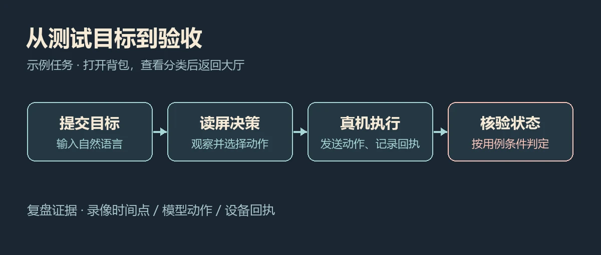

SmartTest
给视觉 Agent 一个目标，让它看着手机屏幕操作。SmartTest 记录模型动作和设备回执，再根据游戏状态判断用例是否通过。
 放大查看 ↗
放大查看 ↗把测试目标交给视觉 Agent
例如“打开背包，查看分类后返回大厅”。模型观察当前画面，选择点击或等待等动作，设备执行后返回结果。SmartTest 将动作、时点和回执记录在同一次运行里。

放大查看 ↗从录像定位模型在哪一步走错
一次真机校准中，模型按要求寻找背包，却进了商城，随后给出过越界坐标。背包条件始终没有满足，这轮记为失败。录像和动作时间轴能定位走偏的时点，游戏状态用于判断是否满足用例条件。
 放大查看 ↗
放大查看 ↗复跑同一个用例
测试界面、CLI 和 MCP 共用运行记录。调用方可以提交目标、等待结果，再读取这次运行的证据。遇到需要反复重现的步骤，也可以保存工作流的指定版本，沿同一套步骤复跑。